使用Multiwfn绘制态密度(DOS)图考察电子结构Plotting density-of-states maps by Multiwfn to study electronic structure
文/Sobereva@北京科音First release: 2019-May-14 Last update: 2024-Jul-31
0 前言
基于主流量子化学程序产生的波函数信息，使用Multiwfn可以对孤立体系非常简单、快速、灵活地产生质量非常理想的态密度图，对于分析化学体系的电子结构特征很有帮助。本文将介绍各类态密度图（Total DOS、Partial DOS、Overlap population DOS、Local DOS）的原理，以及它们在Multiwfn程序中的绘制方法。DOS虽然是第一性原理计算范畴的重要概念，但本文对DOS的绘制只涉及量子化学计算范畴。
Multiwfn从很早期的版本开始就支持DOS的绘制，后来又不断进行了改进和完善，如今已非常强大，显著强于其它任何能绘制DOS的程序。Multiwfn的DOS绘制功能已经被大量发表的文章所使用，比如Carbon, 165, 461 (2020)、Chem. Asian. J., 16, 2267, (2021)、Carbon, 187, 78 (2022)、J. Comput. Chem., 38, 1574 (2017)、RSC Adv., 5, 78192 (2015)、Nature Communication, 8, 14551 (2017)、Phys. Chem. Chem. Phys., 19, 23373 (2017)、J. Phys. Chem. C, 119, 8349 (2015)、J. Phys. Chem. A, 121, 4009 (2017)、Chem. Eur. J. , 24, 17046 (2018)等等等等，这些文章也可以当成例子。
本文的内容非常深入细致，如果你很急着作出TDOS/PDOS/OPDOS图，可以先直接参考本文第3节的例子，之后若想全面了解Multiwfn的绘制DOS的功能，再看本文其它部分。本文内容对应Multiwfn官网上的最新版本，不要用太老的版本，否则情况和本文可能明显不符！Multiwfn可在其官网http://sobereva.com/multiwfn免费下载，相关基础知识看《Multiwfn入门tips》（http://sobereva.com/167）和《Multiwfn FAQ》（http://sobereva.com/452）。在笔者讲授的《量子化学波函数分析与Multiwfn程序培训班》（http://www.keinsci.com/workshop/WFN_content.html）中专门有一节详细讲态密度的相关概念、分析和绘制，内容远比本文深入全面得多，欢迎参加。
Multiwfn的DOS绘制模块还能用于计算d-band center，对于讨论过渡金属表面化学吸附和催化问题很重要，见《用Multiwfn计算过渡金属的d-band center（d带中心）》（http://sobereva.com/582）。
目前最新版Multiwfn可以基于第一性原理程序CP2K产生的记录周期性体系波函数的.molden文件绘制各种类型的DOS图，怎么用CP2K产生.molden文件参见《详谈使用CP2K产生给Multiwfn用的molden格式的波函数文件》（http://sobereva.com/651）中的相关部分。特别注意计算时不要用OT，否则不产生轨道能量信息。而且应当让CP2K计算出最低一批空轨道（默认只计算占据轨道）。
1 态密度的物理意义与种类
态密度（Density-of-states，DOS）是一个以能量为变量的函数。DOS(E)代表在能量为E的位置，单位能量区间内态的数目。“态”具体指什么，看这个词具体用在什么地方。
一般说DOS这个词较多的场合是第一性原理领域，此时的态通常指的是解KS-DFT方程得到的单电子轨道。第一性原理研究的主要是周期性体系，有k点的概念，不同k点处轨道能级也不同。第一性原理计算可以得到物理意义严格的DOS，即通过对k空间进行积分得到。
量子化学主要研究的是孤立体系（分子、团簇等），当使用DOS考察体系电子结构时，态指的是分子轨道（可以由HF、半经验、KS-DFT等各种基于单电子近似的理论方法计算产生）。孤立体系计算的时候没有k点的概念，算出来的轨道能级都是离散分布的，因此DOS这个词对于孤立体系来说本身没什么意义，画出图来的话，就是下面这样，对应的公式也一起给出了（为了避免和后文说的其它类型的DOS混淆，这里用了Total DOS (TDOS)这个词）。
1.png (45.61 KB, 下载次数 Times of downloads: 456)
下载附件 Download
2019-5-14 22:42 上传 Uploaded
上图中虚线位置是HOMO的位置，公式里ε是轨道能量，δ是狄拉克δ函数（不懂的话Google）。从上图可见，孤立体系的TDOS图本身只不过相当于在分子轨道能级位置画一个竖线而已，这种图一点意思也没有，没法传递出比轨道能级分布本身更多的信息。
如果通过一些函数将上图中这些离散的竖线依次进行人为地展宽然后再累加，从图中将可以一目了然地看到不同能量区域内轨道分布的密集程度，如下图所示。注意这种展宽纯粹是人为的，仅仅是为了便于直观分析而做的，这样得到的DOS曲线并不是像第一性原理计算那样是以严格方式得到的。
2.png (23.19 KB, 下载次数 Times of downloads: 475)
下载附件 Download
2019-5-14 22:42 上传 Uploaded
不同的展宽函数把离散的竖线展宽出的峰的形状不同。绘制DOS时展宽函数一般用Gaussian函数，在Multiwfn里也允许用Lorentzian函数，或者二者混合产生的Pseudo-Voigt函数。函数表达式这里就不列出了，读者可以在Multiwfn手册里的介绍DOS绘制功能的3.12节中看到。不管用的是哪个展宽函数，都会牵扯到半高全宽（FWHM）这个参数，即竖线展宽出来的峰在高度一半的位置峰的宽度。显然FWHM设得越大峰越宽，曲线看起来就越平滑、越连续，而FWHM越小则对峰的分辨率越高，绘制上图用的FWHM为0.05 a.u.。FWHM这个值没有什么物理意义，设多大是具有主观任意性的，一般的设定标准是让得到的图适合、便于说明自己想说明的问题。下图分别是FWHM改为0.1 a.u.和0.02 a.u.时候得到的图。
3.png (89.36 KB, 下载次数 Times of downloads: 445)
下载附件 Download
2019-5-14 22:42 上传 Uploaded
在《使用Multiwfn绘制光电子谱》（http://sobereva.com/478）一文中，得到光电子谱(PES)的方式在本质上和上述绘制TDOS其实如出一辙。
还可以定义Partial DOS (PDOS)，可以叫做“局部DOS”或“分数DOS”，它体现的是特定的片段对TDOS贡献的曲线。若恰当定义片段，通过PDOS图就可以较好地把握不同能量区间的轨道的本质、主体构成。显然，如果定义的所有片段的并集等于整个体系的话，那么每个片段的PDOS曲线累加在一起正好就是TDOS。对于某个片段A，其PDOS定义如下。其中F是展宽函数，Θ是轨道成份。
4.png (18.97 KB, 下载次数 Times of downloads: 439)
下载附件 Download
2019-5-15 00:04 上传 Uploaded
计算轨道成份的方法很多，详见《谈谈轨道成份的计算方法》（http://sobereva.com/131）和《分子轨道成分的计算》（http://sioc-journal.cn/Jwk_hxxb/CN/abstract/abstract340458.shtml）里的介绍。在绘制DOS的功能中，Multiwfn支持Mulliken、SCPA、Hirshfeld和Becke方法计算轨道成份。
重叠布居DOS（Overlap population DOS，OPDOS）对于考察片段间的相互作用比较有用。笔者在《Multiwfn支持的分析化学键的方法一览》（http://sobereva.com/471）里专门介绍过什么叫Mulliken键级，这和重叠布居（Overlap population）是一码事，可以体现原子间是成键作用还是反键作用，没看过此文的话一定要仔细看一下。文中还提到，重叠布居可以精确分解为各个轨道的贡献，将这个思想和DOS图搞到一起，就是OPDOS的定义了。下式是片段A与B之间的OPDOS的表达式
5.png (10.02 KB, 下载次数 Times of downloads: 433)
下载附件 Download
2019-5-14 22:43 上传 Uploaded
式中的那个Χ项，也等价于假设i轨道是占据的，然后这个轨道对片段A和B之间的重叠布居的贡献量除以轨道占据数。在某个能量范围，若OPDOS数值明显为正，就说明这个能量范围里的轨道如果被电子占据了的话，会对两个片段间的结合起到积极贡献，换句话说，这些轨道对这两个片段而言是成键轨道；若数值为负，说明这些轨道如果被电子占据了的话，将对片段间的结合产生不利贡献，相当于起到反键轨道作用。
虽然OPDOS确实能展现片段间相互作用的情况，但是由于Mulliken键级本身对键的强度反映不好，所以也别太把OPDOS当回事。而且，有弥散函数的情况下，OPDOS结果会很离谱，可能数据完全没有意义。所以，若计算波函数时有弥散函数则不要讨论OPDOS，若必须讨论OPDOS且之前的计算用了弥散函数，应把弥散函数去掉算个单点重新得到波函数后再做分析。Multiwfn是分析成键问题的百宝箱，里面有大把方法可以很好地讨论化学键特征，所以千万别拘泥于拿OPDOS说事，强烈建议仔细看《Multiwfn支持的分析化学键的方法一览》（http://sobereva.com/471）。另外，之前笔者还见到有人试图拿两个片段各自的PDOS曲线讨论它们的成键，以为在某些能量区间它们同时较大就说明二者间有成键作用，这明显毫无意义，且不说它们是相位相同方式重叠还是相位相反重叠，首先这种情况都没法体现这两个片段间存在轨道重叠，因为PDOS图根本都体现不出片段的轨道分布在三维空间中的什么区域。
还有一种DOS叫Local DOS，这个留到本文第4节专门介绍。
我们来看一个典型的DOS例子，是Multiwfn的原文J. Comput. Chem., 33, 580 (2012)里的图，将二茂铁的TDOS、PDOS、OPDOS绘制在了一起。为了便于说清楚轨道特征，一部分轨道的等值面图是用Multiwfn的主功能0绘制出来后手动ps到恰当位置的。
6.png (162.21 KB, 下载次数 Times of downloads: 446)
下载附件 Download
2019-5-14 22:43 上传 Uploaded
图中左侧是对应TDOS、PDOS曲线的轴，右侧是对应OPDOS曲线的轴。DOS或OPDOS的数值的绝对大小是我们不需要关心的，刻度轴的标签都抹掉也无妨，需要关心的仅仅是不同能量区间之间曲线的相对高度。为了便于直观考察不同能量区间内轨道的本质，绘制时定义了三个片段：
• 片段1：Fe的所有轨道
• 片段2：碳的垂直于茂环的p轨道。由于茂环在XY平面上，因此它们也即碳的pz轨道，合在一起相当于茂环的pi轨道
• 片段3：茂环的碳的其它轨道，即s、px、py
由图可见，对于能量比较低区间的轨道，诸如-0.53 a.u.的那一批，从图上立马就可以判断出它们基本都是由碳的s、px、py轨道贡献的，结合轨道等值面图也看出确实如此。而对于能量为-0.25 a.u.附近的轨道，蓝色曲线和红色曲线都较高，说明这些轨道应当是由茂环的pi轨道与铁的轨道混合产生的，确实从轨道等值面上也可以证实是由铁的d轨道与茂环的pi轨道以相位相同叠加组合出的。在HOMO轨道位置，Fe片段的PDOS与TDOS非常接近，说明HOMO主要是由Fe的轨道构成的，茂环的参与较弱。我们再看绿色的OPDOS曲线。在比如-0.25 a.u.附近，绿色曲线明显为正，说明这些轨道的存在对于茂环与铁的结合起到积极作用，这也容易理解，毕竟是相位相同叠加，所以对于此二者而言起到的是显著的成键轨道作用。对于非占据轨道区域，可见OPDOS曲线都为显著的负值，这也就是说，如果它们被电子占了，倾向于让茂环与铁的结合散架。确实从LUMO的轨道图来看，是Fe的d轨道与茂环的pi轨道以相位相反方式组合出来的，对它俩而言无疑起到的是反键轨道作用。
从上面这个例子看出，DOS图很有助于清楚、直观地讨论化学体系的电子结构。虽然可能有人觉得，用Multiwfn方便的轨道成份计算功能（主功能8，操作见http://sobereva.com/131和手册4.8节的例子），批量计算片段对各个轨道的贡献值也能得到本质上同样的信息，但是这样的话你得去分析一大堆数据，而且写文章的时候得把一大堆数据堆上去，审稿人和读者看着也累，远没有DOS图一目了然、远不如通过DOS图讨论起来方便。
2 Multiwfn中的DOS绘制功能
下面对Multiwfn的绘制DOS的功能做一下系统的介绍。
2.1 基本使用流程
将输入文件载入Multiwfn，进入主功能10，然后会看到一个菜单，里面有很多选项可以调节作图设定。设好后，按0，DOS图马上就可以显示出来。关闭图像后，会看到一个后处理菜单，里面又有很多选项来调节绘制参数，修改后可以选1 Show graph again重新绘图查看当前的效果。
如果绘图前不设定片段，则绘制出来的图是TDOS。如果先用-1 Define fragments设定片段再绘图，则绘制出来的是TDOS+PDOS。如果片段1和片段2都定义了，则这俩片段间的OPDOS会一同绘制出来。
2.2 输入文件
.mwfn、.fch、.molden、.gms文件都可以作为输入文件绘制TDOS、PDOS、OPDOS以及后文提到的LDOS，怎么生成它们见《详谈Multiwfn支持的输入文件类型、产生方法以及相互转换》（http://sobereva.com/379）。也可以使用Gaussian单点任务的输出文件（必须带着pop=full）作为输入文件，但此时只能绘制TDOS。.wfn、.wfx格式不能作为输入文件，因为这俩格式不包含空轨道信息。
为灵活起见，对于只需要绘制TDOS的目的，Multiwfn也支持通过文本文件作为输入，自行把轨道能级等信息按照要求的格式写进去即可，格式见手册3.12.2。因此，原理上任意量子化学程序计算出的轨道能级都可以被Multiwfn展宽成TDOS曲线绘制出来。
2.3 DOS绘制界面里的选项
进入主功能10后看到的菜单里面的选项在这里说一下，用途特别显而易见的就不提了。一般来说默认选项下绘制出的图不会恰好满足需要，因此需要反复调节选项、反复作图直到满意为止。
-5 Customize energy levels, occupations, strengths and FWHMs for specific MOs：默认情况下，轨道能量、占据数都是从输入文件里读的，如果你想修改，可以用这个选项。默认情况下，每个轨道的强度值(strength)都为1，FWHM都是相同的，如果你想对不同的轨道进行独立的设定，也可以用这个选项。展宽出的峰的积分面积与轨道的强度值是呈正比的。
-4 Show all orbital information：显示所有轨道的能量、占据数、强度值、FWHM信息。
-3 Export energy levels, occupations, strengths and FWHMs to plain text file：把所有轨道的能量、占据数、强度值、FWHM信息导出到当前目录下的orginfo.txt中。这个文件的格式是满足作为Multiwfn绘制TDOS的输入文件的要求的，因此你可以自行修改这个文件里的数据后作为输入文件。
-2 Define MO fragments for MO-PDOS：这个选项专用于绘制一种我起名叫MO-PDOS的图中涉及的片段，本文第6节会提到。
-1 Define fragments for PDOS/OPDOS：设定片段。这会在本文2.5节专门说。
1 Select broadening function：设置展宽函数。可以用Gaussian、Lorentzian和Pseudo-Voigt。
2 Set energy range：这用来设置绘制出的DOS图的横坐标，即能量下限、上限、标签间隔。
4 Set scale ratio for DOS curve：设定DOS曲线乘的系数。这个数值越小，曲线的数值显然就越小，而离散的竖线相对于曲线就显得越高。因此如果你觉得作出的图里面离散竖线的高度相对于曲线太高或太低，可以用这个选项调节。
6 Choose orbital spin：对于非限制性开壳层波函数的情况才会看到此选项，用于选择在绘图时考虑哪些轨道。可以只考虑alpha轨道，或只考虑beta轨道，或alpha和beta轨道同时考虑。
7 Set the method for calculating PDOS：设定绘制PDOS时用的轨道成份的计算方法。
8 Switch unit between a.u. and eV：切换横坐标的单位，默认是a.u.，对于能量而言就是指的Hartree，而eV也很常用。1 Hartree=27.2114 eV。
9 Toggle using line height to show orbital degeneracy：选此选项后，程序会让你输入能量阈值，当相邻轨道能量差小于这个值的时候，程序将会把它们视为简并，并且在DOS图上通过竖线高度体现简并度。一般就用默认的阈值即可。此选项可以结合TDOS、MO-PDOS图使用，但在绘制PDOS图时不能用。
在DOS绘制界面里经常要进行诸多设置才能达到最满意的效果。为了避免日后重新绘制完全相同的图（或在此基础上进一步修改）时还得再重新输入一遍设置，在DOS绘制界面里（不是后处理菜单）中，用户可以直接输入s（意为save）来将作图设定、片段设定、轨道信息一起保存到一个用户指定的文本文件里。日后再次启动Multiwfn并载入相同体系后，进入DOS绘制功能，只需输入l（意为load），然后选择之前保存的状态文件，就能立刻恢复先前的作图状态。
2.4 关于绘制PDOS用的轨道成份
绘制PDOS用的轨道成份的计算方法支持下面四种：
• Mulliken方法：此为默认。计算速度很快，但可能给出缺乏物理意义的结果（片段贡献超过100%或为负值），对于空轨道的可靠性低于占据轨道，而且绝对不能用于有弥散函数的情况！
• SCPA方法：速度和Mulliken一样快，相对于Mulliken方法唯一的好处是轨道成份不会算出来超过100%或负值，但其它问题仍在。
• Hirshfeld方法：基于Hirshfeld方式的实空间划分来计算轨道成份，比Mulliken和SCPA方法更为昂贵，优点是对于空轨道和占据轨道都非常可靠、稳健，而且不怕弥散函数。
• Becke方法：和Hirshfeld方法各方面都差不多，结果一般也都相近，只不过对原子空间的定义不同。
使用Mulliken和SCPA方法时，定义片段时最小的单位是基函数，也因此可以等效实现把特定的原子轨道、特定角动量的轨道、原子轨道壳层等定义为片段，非常灵活。而Hirshfeld和Becke方法只能计算原子在轨道中所占成分，因此定义片段的时候最小单位是原子，而且此时无法绘制OPDOS。
2.5 片段的定义方法
进入前述的片段定义界面后，你会看到一个片段列表，有10个片段可以定义。定义几个，PDOS就会绘制出几条曲线。片段1和片段2同时定义时也同会对二者绘制OPDOS。
要定义哪个片段，就在这个界面里输入哪个片段的序号即可，之后会开始片段的定义。如果比如2号片段已经定义了，输入-2就可以把这个片段清空，使之处于未定义状态。输入两个片段序号比如2,5可以交换两个片段（这个设置是为了便于把想考察OPDOS的两个片段切换到片段1和片段2）。如果你的片段定义比较复杂，以后还可能要用，可以输入字母e将片段定义导出为当前目录下的DOSfrag.txt，下次再进入这个界面时可以输入i来从当前目录下的DOSfrag.txt中导入片段定义，省得再重新设一遍了。
用Hirshfeld或Becke方法计算轨道成份时，设定片段的内容时就按提示输入原子序号即可，比如1,3-5,12,15就代表把1,3,4,5,12,15号原子定义为片段。
用Mulliken或SCPA方法计算轨道成份时，片段里记录的是基函数的序号。开始定义片段后，会看到一个命令很丰富的设定界面，值得细说一下。在这个界面里，你首先在屏幕上会看到一大堆命令的介绍以及用法示例。如果你想让这些帮助信息重新显示出来，可以随时输入help。下面对可以用的命令都解释一下：
q：保存片段并离开定义当前片段的界面，屏幕上会提示片段里都加入了哪些基函数
list：显示当前片段里包含的基函数序号
clean：清空片段。默认情况下，片段里是没有内容的，如果之前已经对这个片段进行过定义，再次定义时原先那些基函数还会在，因此想彻底重新定义之前应当输入clean清空一下
addall：将所有基函数加入这个片段，即这个片段等同于整个体系
inv：反转定义。原先在片段里的基函数将不再片段里，而不在片段里的将被加入片段里
a：按照原子(atom)定义片段。比如a 2,5-8,12代表把2,5,6,7,8,12原子上的基函数都加入片段
s：按照基函数壳层(shell)定义片段。比如s 2,5-8,12代表把2,5,6,7,8,12号基函数壳层里的基函数都加入片段
b：按照基函数(basis function)序号定义片段。比如b 2,5-8,12代表把序号为2,5,6,7,8,12的基函数都加入片段
l：按照角动量定义片段。后面跟着角动量名字。比如l s,d就代表把s和d角动量的基函数都加入片段
e：按元素定义片段。后面跟着元素名。比如e Fe就代表把所有铁上的基函数都加入片段
da、db：分别按照原子序号和基函数序号来从当前片段中删除基函数
cond：将满足条件的基函数加入片段，条件包括基函数所处的原子的序号范围、基函数所处的序号范围、基函数类型（如S、Y、XZ）或者基函数所处的壳层的类型（如S、P、D）。只有同时满足这三个条件的基函数才会被加入片段。如果想无视某个条件，设相应条件时输入a（代表all）即可。
a、s、b、l这些命令若反复用多次，每次都会把满足要求的基函数添加到片段，换句话说片段里包含的会是它们的并集。而cond这种方式加入的基函数是自己设的三个条件的交集。上面说到的所有这些往片段里加入基函数的命令都可以反复使用多次，效果是累加的（某些基函数加重复了也没关系，程序会自动去除重复的）。
如果你想查看基函数、壳层、原子的对应关系和特征，随时可以用all命令，会输出诸如下面这些，此例是6-31G*用于HF分子。如果某个基函数已经在片段里了，前面会显示星号。如果屏幕上显示不全，参考手册5.5节来加大窗口缓冲区。
Basis: 1 Shell: 1 Center: 1(H ) Type: S
Basis: 2 Shell: 2 Center: 1(H ) Type: S
Basis: 3 Shell: 3 Center: 2(F ) Type: S
Basis: 4 Shell: 4 Center: 2(F ) Type: S
Basis: 5 Shell: 5 Center: 2(F ) Type: X
Basis: 6 Shell: 5 Center: 2(F ) Type: Y
Basis: 7 Shell: 5 Center: 2(F ) Type: Z
Basis: 8 Shell: 6 Center: 2(F ) Type: S
Basis: 9 Shell: 7 Center: 2(F ) Type: X
Basis: 10 Shell: 7 Center: 2(F ) Type: Y
Basis: 11 Shell: 7 Center: 2(F ) Type: Z
Basis: 12 Shell: 8 Center: 2(F ) Type: XX
Basis: 13 Shell: 8 Center: 2(F ) Type: YY
Basis: 14 Shell: 8 Center: 2(F ) Type: ZZ
Basis: 15 Shell: 8 Center: 2(F ) Type: XY
Basis: 16 Shell: 8 Center: 2(F ) Type: XZ
Basis: 17 Shell: 8 Center: 2(F ) Type: YZ
上面显示的X,Y,Z即PX,PY,PZ型基函数，XX,YY,ZZ,XY,XZ,YZ都是笛卡尔型D型基函数的标识，不懂的话看《谈谈5d、6d型d壳层基函数与它们在Gaussian中的标识》（http://sobereva.com/51）。根据6-31G*定义，我们可以立刻判断出哪些基函数对应哪些原子轨道。比如对于F，由于每个内层原子轨道用一个基函数描述，每个价层原子轨道用两个基函数一起描述。因此你输入b 3，就等于把1s原子轨道加入片段了；如果输入b 4,8或者等价的s 4,6，就代表把2s原子轨道加进去了；如果输入b 5-7,9-11或者等价的s 5,7，就代表把2p原子轨道加进去了；如果输入b 12-17或s 8，就代表把给F加的d极化函数加进去了。
对于非Pople系列基组，往往基函数与原子轨道的对应关系没法根据基组名字简单判断，但笔者也发明了一种简单且普适的判断方法，参见《利用布居分析判断基函数与原子轨道的对应关系》（http://sobereva.com/418）。
2.6 后处理菜单中的选项
在绘制出图像并关闭图像后，后处理菜单中也有很多选项可以设定绘制参数，这里把其中一部分提一下，其它的选项含义不言自明。
-1 Set format of saved image file：用来设置通过选项2保存出来的图像的格式。对于除了二维LDOS（见后文）以外的DOS图，由于图中的主体都是线条，建议使用矢量格式，比如pdf、ps、wmf（可以嵌入Office的组件中）、svg（可以用网页浏览器打开），这样线条看着光滑且可以无损缩放。如果想修改默认的格式，可以改settings.ini里的graphformat。
1 Show graph again：后处理菜单修改过选项后，可以用这个选项重新绘制图像检查当前效果。
2 Save the graph to image file in current folder：将图像文件保存到当前目录，文件名前缀为DISLIN。如果不懂什么叫当前目录，看http://sobereva.com/237。
3 Export curve and line data to plain text file in current folder：这个选项可以把DOS曲线数据和离散竖线数据导出到当前目录下的文本文件中，之后可以导入Origin之类程序中画DOS图，届时有更多可调选项可用。
选项5~10：用来设定是否显示TDOS、各个PDOS、OPDOS曲线和离散的竖线。
11 Set color for PDOS curves and lines：设定各个PDOS的曲线和离散竖线的颜色
12 Set position of legends：设定图例的X和Y位置。X数值越大越靠右，Y数值越大越靠下。通过调节这个可以避免图例把曲线挡住。用选项13也可以完全关闭图例。
14 Set scale factor of Y-axis for OPDOS：对OPDOS设置倍数因子。OPDOS对应图中右侧坐标轴，其范围是对左侧坐标轴（对应于TDOS和PDOS）的范围乘上这个倍数因子得到。因此通过设定这个值可以控制OPDOS曲线相对于TDOS/PDOS曲线的高低。
15 Toggle showing vertical dashed line to highlight HOMO level：默认情况绘制出的DOS图上有个垂直的虚线，用来标注HOMO轨道的位置以便分清楚哪些DOS区域是占据的和非占据的。用这个选项可以关闭这个虚线的显示。老有人以为这个虚线是费米能级的位置，这完全是误解。费米能级是固体物理里的概念，对于孤立体系，费米能级本身就是个ill-defined的概念，对于孤立体系绝对不要用费米能级这个词。
16 Set the texts in the legends：设置TDOS、各个PDOS、OPDOS显示在图例中的文字
选项17、18：设置DOS曲线和离散竖线的粗细。注意线条在屏幕上显示的粗细可能和保存出的图像文件里的粗细不同。
19 Toggle showing labels and ticks on Y-axis：用这个选项可以关闭纵轴上的标签和刻度。前面说过，DOS图中的绝对数值大小没什么实际意义，不想显示的话可以索性用这个关了。
3 TDOS/PDOS/OPDOS在Multiwfn中的绘制例子
下面给出几个有代表性的DOS图的绘制例子。这些例子显然不可能把所有情况都体现，读者务必将例子与上面介绍的原理和选项说明相结合，举一反三。手册4.10节还有更多的例子。下面例子用到的所有文件都可以在此下载：http://sobereva.com/attach/482/file.rar，计算都通过Gaussian 16实现。
3.1 绘制二茂铁的各种DOS图
这一节我们以二茂铁为例演示一下绘制TDOS、PDOS、OPDOS，复杂度由浅入深。这个例子的Gaussian输入文件是本文文件包里的Ferrocene.gjf，可见关键词是BP86/genecp opt，对Fe用的SDD赝势基组，对茂环用的6-31G*。绘制DOS不需要用太高质量波函数，用这样比较便宜的基组就够了。计算产生的fch文件是文件包里的Ferrocene.fch。
3.1.1 绘制TDOS图
我们先看怎么绘制最简单的TDOS。启动Multiwfn，载入Ferrocene.fch，依次输入
10 //DOS绘制模块
0 //绘制TDOS
马上就看到下图
f1.png (75.79 KB, 下载次数 Times of downloads: 373)
下载附件 Download
2021-9-21 11:34 上传 Uploaded
上图中虚线标注了HOMO的位置，黑色和灰色竖线分别展现占据轨道和空轨道。
如果你想让轨道的简并度通过竖线高度体现出来，可以输入
0 //从后处理菜单返回DOS绘制界面
9 //考虑简并度
[按回车] //用默认的0.005 eV阈值。如果两个轨道的能量差小于这个阈值就被认为是简并的轨道
0 //绘图
现在看到下图，竖线高度对应右边的坐标轴，可见很多轨道是双重简并的。当前体系是D5d点群，原理上就是有很多轨道会双重简并。
f1_2.png (84.62 KB, 下载次数 Times of downloads: 397)
下载附件 Download
2021-9-21 11:53 上传 Uploaded
3.1.2 绘制PDOS图
下面我们把两个茂环中的所有碳原子作为片段1来绘制它们的PDOS。为此我们需要先知道这些碳原子的序号，可以通过Multiwfn主功能0查看，但原子多的话一个一个记录数字比较费事。一个简单的做法是把Ferrocene.fch载入GaussView（笔者用的GaussView 6.0.16)，用Builder界面里的选择工具把这些碳都选中成为黄色，然后进入Tools - Atom Selection界面，如下所示文本框里直接就显示了这些原子的序号，将它们拷出来备用。
f2.png (81.3 KB, 下载次数 Times of downloads: 447)
下载附件 Download
2019-5-14 22:44 上传 Uploaded
关闭之前显示的TDOS图像，在Multiwfn里依次输入
0 //从后处理菜单退回到DOS绘制界面
-1 //设置片段
1 //定义片段1
a 1-3,7-8,12-16 //将茂环上的碳加入片段
q //保存片段1
0 //退出片段设定界面
0 //绘制TDOS+PDOS图
看到的图像如下，红色曲线就是茂环的PDOS。
f3.png (96.01 KB, 下载次数 Times of downloads: 427)
下载附件 Download
2021-9-21 11:33 上传 Uploaded
3.1.3 绘制TDOS+PDOS+OPDOS图
这一节最后，我们画个较复杂的，重现一下本文前面给出的二茂铁的TDOS+PDOS+OPDOS图。但由于计算级别和Multiwfn的版本与当时绘制那个图的情况有所不同，所以结果得到的图像不会完全相同。
接上一节，从后处理菜单退回到DOS绘制界面，然后依次输入
-1 //定义片段
-1 //撤销掉原先的片段1的定义（先进入片段1然后输入clean命令清空片段也可以实现相同目的）
1 //定义片段1
a 6 //将Fe作为片段1
q //保存此片段
2 //定义片段2。我们要把所有碳的pz轨道加入
cond //以条件方式定义向此片段添加基函数
1-3,7-8,12-16 //茂环上的碳的序号
a //不对基函数序号范围做限制
Z //必须是PZ型基函数，即垂直于茂环的P型基函数（Multiwfn主功能0里有笛卡尔坐标轴，一看就知道茂环正好是在XY平面上）
q //保存此片段
3 //定义片段3。我们要把所有碳的s,px,py轨道加入，需要重复用三次cond命令来实现（大家可以把下面这一串内容直接复制到Multiwfn窗口中执行，省得一行一行敲进去）
cond
1-3,7-8,12-16
a
S
cond
1-3,7-8,12-16
a
X
cond
1-3,7-8,12-16
a
Y
q //保存此片段
现在片段都已经定义好了，可以输入e把片段设定导出到当前目录下的DOSfrag.txt中，以便之后随时在这个界面里通过输入i来恢复之前好不容易设好的片段。然后输入
0 //退出片段定义界面
2 //设定横坐标能量范围
-0.6,0.1,0.1 //能量范围-0.6~0.1 a.u.，标签间隔0.1 a.u.
0 //绘制TDOS+DOS+OPDOS
当前看到的图像如下
f4.png (41.62 KB, 下载次数 Times of downloads: 441)
下载附件 Download
2019-5-14 22:45 上传 Uploaded
此图已经基本有模样了，但还需要做一些调整。图中显得FWHM数值有点大，显得本来挺大的gap看起来都有点连上了，而且纵坐标轴的范围可以再改改，让图像主体区域更加充满画面。图例的文字也需要设一下。关闭图像并输入0退回DOS绘制界面，然后依次输入
3 //修改FWHM
0.03 //比默认值小一点
4 //修改DOS曲线乘的系数
0.05 //比默认值更小，以此让离散的竖线相对于曲线变得更高点
0 //绘图，并根据此时显示的图判断Y轴范围设多少最合适
关闭图像后在后处理菜单输入
4 //修改Y轴设定
-2,12,2 //下限、上限、标签间隔
19 //取消显示Y轴标签和刻度，因为这些没什么实际意义
16 //设置图例文字
1 //设置片段1
Fe
2 //设置片段2
Carbon pz
3 //设置片段3
Carbon s,px,py
0 //返回
1 //重新绘图
目前看到的图像如下，已经令人满意了。
f5.png (27.19 KB, 下载次数 Times of downloads: 415)
下载附件 Download
2019-5-14 22:46 上传 Uploaded
如果你吹毛求疵的话，还可以把图例文字挪到图的靠右侧空档比较大的地方，然后把Y轴上限再设小点以让曲线看起来更高，做法是在后处理菜单输入
12 //修改图例位置的绝对坐标
1830 //图例的横坐标的绝对位置，越大越靠右。可以反复尝试直到位置合适
[按回车] //原先图例的纵坐标位置保持不变
4 //修改Y轴设定
-2,8.5,2 //下限、上限、标签间隔
1 //重新作图
你会看到此时屏幕上显示的图像已经挺完美了。我们可以导出为pdf格式，这样线条会很光滑。输入
-1 //修改导出文件的格式
7 //pdf格式
2 //将图像文件保存
此时当前目录下出现了dislin.pdf，此文件是本文文件包里的Ferrocene.pdf，效果如下，可以算是无可挑剔了
f6.png (78.01 KB, 下载次数 Times of downloads: 443)
下载附件 Download
2019-5-14 22:45 上传 Uploaded
大家也可以自行把一些轨道的等值面图ps上去。图中每个竖线对应哪条轨道，通过DOS界面里-4 Show all orbital information把轨道信息都显示出来，将其中的能量和DOS图上竖线位置一对照便知。找到序号后，即可按照《使用Multiwfn观看分子轨道》（http://sobereva.com/269）中的做法方便、迅速地绘制出图形。
值得一提的是，如果某个共轭环不是恰好平行于某个笛卡尔平面的话，是没法把通过恰当选取基函数来试图把这个环的pi轨道定义为片段的，因为此时pi轨道会由px,py,pz共同贡献。如果被考察的环就一个，也可以用《调节平面分子间距的方法》（http://sobereva.com/178）中的alignplane脚本让特定的环平行于XY平面，然后算一次单点以得到fch文件，算的时候记得用nosymm关键词避免体系被Gaussian调整到标准朝向。
3.2 绘制PhCz的DOS图
PhCz是一个普通有机分子，B3LYP/6-31G*优化任务产生的fch文件是本文文件包里的PhCz.fchk，下面我们以它为例绘制一些DOS图，这些图没多大实际意义，仅为了演示怎么操作用。
3.2.1 对不同角动量绘制DOS图
这个例子中我们要绘制PDOS图，要把所有原子的s、p、d角动量基函数分别定义为三个片段，并且把苯基上原子的p角动量基函数定义为第4个片段。
启动Multiwfn，载入PhCz.fchk，然后输入
10 //DOS绘制模块
-1 //定义片段
1 //定义片段1
l s //把所有角动量为S的基函数加入此片段
q //保存片段1。接下来类似地把所有原子的p和d基函数分别定义为片段2和3
2
l p
q
3
l d
q
4 //定义片段4
cond //条件方式定义
22-25,27,29 //苯基上碳原子序号
a //对基函数序号范围不做限制
P //基函数必须是P角动量
q //保存片段4
0 //返回DOS界面
8 //把横坐标单位切换为eV
2 //设定横坐标
-20,2,3 //范围为-20~2 eV，标签间隔3eV
0 //绘图
关掉图像后，输入
9 //切换OPDOS曲线显示状态来将之隐藏。因为OPDOS不是我们目前感兴趣的
10 //切换OPDOS离散竖线显示状态为隐藏
17 //修改曲线粗度
5 //比默认粗一点
4 //修改Y轴范围
0,0.55,0.1 //设为0~0.55、步长0.1
22 //让竖线显示在曲线下方，这样更清楚
然后在后处理菜单恰当设置图例文字，最终得到的图像如下：
PhCz_1.png (97.01 KB, 下载次数 Times of downloads: 450)
下载附件 Download
2021-9-21 12:36 上传 Uploaded
由此图可以看到靠近HOMO和LUMO的那些前线分子轨道主要都是由p轨道贡献的，s轨道只参与更低和更高的能级。d基函数对图中展现的这些轨道参与程度极低，因为d对于这个体系而言是起到极化函数的作用，本身这个体系涉及的元素没有d电子，所以d型基函数对占据轨道以及化学意义相对强一些的低阶空轨道的贡献必然很低。图上还可以看出，对图中涉及的能量范围里的轨道，其中大部分都有苯基的显著参与，不过对于HOMO和HOMO-1，苯基参与程度很低。
顺带一提，绘制当前这个图的操作较多，建议画完之后保存作图状态。也就是从后处理菜单返回DOS绘制界面后输入s，然后输入绘图状态文件的保存路径，比如D:\PhCz_PDOS.dat。以后想重新作图时，进入DOS绘制界面后输入l，再输入状态文件的路径即可恢复之前的作图状态。
3.2.2 基于Hirshfeld计算的轨道成份绘制DOS图
前面的例子绘制PDOS图的时候用的都是默认的Mulliken方法算的，此例我们基于Hirshfeld方法来计算轨道中原子所占成分。将要定义三个片段，一个是苯基，一个是分子中央的氮原子，其余原子定义为第三个片段。
启动Multiwfn，载入PhCz.fchk，然后输入
10 //DOS绘制模块
7 //修改计算轨道成份的方法
3 // Hirshfeld。之后程序会把所有轨道的成份计算出来放到内存里备用
-1 //定义片段
1 //定义片段1
22-32 //苯基
2 //定义片段2
21 //氮原子
3 //定义片段3
1-20 //其余原子
0 //返回片段定义界面
0 //绘制TDOS+PDOS图
关闭当前图像。我们想让离散的竖线不显示，在后处理菜单中输入
6 //关闭TDOS竖线
8 //设定PDOS竖线的显示状态
1 //关闭片段1的竖线
2 //关闭片段2的竖线
3 //关闭片段3的竖线
0 //返回
然后适当调节Y轴范围、图例文字、曲线粗细，可得下图
PhCz_2.png (74.83 KB, 下载次数 Times of downloads: 424)
下载附件 Download
2019-5-14 22:46 上传 Uploaded
3.3 绘制开壳层体系Cr3Si12-团簇的DOS图
前面考察的都是闭壳层体系，这里绘制一个开壳层体系Cr3Si12-。这个体系在《使用Multiwfn绘制光电子谱》（http://sobereva.com/478）文中考察过，基态是八重态，PBE/6-311+G*计算得到的文件是本文文件包里的Cr3Si12-.fchk。这个体系里Si绕着排成一条直线的三个Cr分布。我们打算绘制TDOS，并且把三个Cr设为一个片段来同时绘制它的PDOS。由于计算时用了弥散函数，所以这次也必须用Hirshfeld或Becke方法计算轨道成份。
启动Multiwfn并载入Cr3Si12-.fchk，然后输入
10 //DOS绘制模块
7 //修改计算轨道成份的方法
3 //Becke方法（用Hirshfeld方法也可以，结果相仿佛）
-1 //定义片段
1 //定义片段1
1,2,15 //三个Cr的序号
0 //离开片段设定界面
接下来做一些调整，都是我之前对此体系事先试出来的比较合适的设定
8 //切换横坐标为eV
2 //设置能量范围和标签间隔
-7,2,1
3 //修改FWHM
0.3 //注意此时输入的FWHM的单位应是eV
4 //设定曲线乘的系数
0.5
0 //画TDOS+PDOS图
此时看到的图像如下。注意对于非限制性开壳层波函数，默认考虑的是alpha自旋，因此下图的离散竖线、曲线体现的都只是alpha轨道，虚线也对应的是alpha的HOMO
cluster_alpha.png (60.7 KB, 下载次数 Times of downloads: 430)
下载附件 Download
2019-5-14 22:46 上传 Uploaded
我们再来绘制beta自旋的图。关闭图像接着输入
0 //退回到DOS界面
6 //设置考虑的自旋
2 //只考虑beta自旋
0 //画TDOS+PDOS图
此时看到的图像如下，可见与alpha的图像差异挺明显，这说明此体系的这个电子态的自旋极化现象比较明显，图中的虚线对应的是beta的HOMO位置，可见比alpha的HOMO低不少。
cluster_beta.png (59.32 KB, 下载次数 Times of downloads: 435)
下载附件 Download
2019-5-14 22:47 上传 Uploaded
如果在选择自旋的界面里选择Both spins的话，绘制出的图将把alpha和beta轨道一起考虑，得到的图相当于上面两幅图的加和。
在很多文献里，为了便于对比，往往是把alpha的图绘制在上方，beta的图反转一下绘制在下方，这样对比起来比较容易。这样的图在Multiwfn里没法直接绘制，但是可以很容易地通过把数据导出，然后弄到Origin里绘制。下面来实际操作一下。
还是和之前一样先把alpha部分的图画出来，然后在后处理界面里选择选项3，此时如屏幕上的提示所示，当前目录下已经产生了DOS_curve.txt和DOS_line.txt，分别记录了曲线和离散竖线的X-Y数据点信息，这俩文件每一列的含义在屏幕上也提示得超级清楚。若将这俩文件弄到Origin里，用其中的数据绘制曲线图，恰当设定后可以得到和Multiwfn绘制效果相同的图。我们这里不打算把离散竖线在Origin里绘制出来，所以DOS_line.txt不用管，我们把DOS_curve.txt改名成alpha.txt。然后回到DOS绘制界面，把自旋切换成beta，也在后处理菜单导出这俩文件，并且把DOS_curve.txt改名为beta.txt。接下来，把alpha.txt和beta.txt全都拖入Origin导入。此时在alpha.txt和beta.txt各自的工作表里，第A列是能量，第B列是TDOS，第C列是第一个片段的PDOS。将beta.txt的表格里的D列内容定义为-Col(B)、E列内容定义为-Col(C)来实现曲线数据上下反转的目的。然后绘制曲线图，将alpha.txt里的A列作为X数据、将B和C列作为Y的数据加入，之后将beta.txt里的A列作为X数据、将D和E列作为Y的数据加入。然后我们可以再创建个额外的工作表，在里面填上适当内容，以使得对它们作line形式的图时，Y=0的横线、alpha HOMO位置、beta HOMO位置可以被显示在图上。其中alpha和beta各自的HOMO的能量在进入Multiwfn主功能0时文本窗口中直接就会提示。经过适当调整，最终得到的图像如下，Origin的opj文件已经提供在了本文文件包里，如果有糊涂的，看一下这个文件必然就懂了。
cluster_origin.png (87.78 KB, 下载次数 Times of downloads: 424)
下载附件 Download
2019-5-14 22:47 上传 Uploaded
4 关于Local DOS
TDOS体现整体的DOS，PDOS体现片段的DOS，而Local DOS (LDOS)则体现三维空间中某个点的DOS，因此也被叫做spatial DOS，其定义如下。注意，在一些书籍和文献里，LDOS这个词有时指的是前面说的PDOS。
7.png (6.04 KB, 下载次数 Times of downloads: 416)
下载附件 Download
2019-5-14 22:47 上传 Uploaded
式中，r是三维空间的坐标矢量，φ是轨道波函数，取平方后就相当于这个轨道上电子的概率密度。三维空间某个特定的点的LDOS图是个曲线图，横坐标是能量，图中出现较高峰的地方，体现出某条轨道在r位置的概率密度较大，而且这个轨道的能量也差不多是这个能量。
三维空间中某一条路径上各个点的LDOS可以通过二维填色图的形式展现，横坐标是能量，纵坐标是与路径始端的距离，LDOS值通过颜色的不同来体现，这可以称作二维LDOS图，这种图对于解释扫描隧道显微镜(STM)的数据有帮助，下图出自J. Phys. Chem. Lett., 5, 3701 (2014)，三维空间中取的路径如左图所示，对应右边LDOS图的纵轴，其中5个有代表性的点被做了特别的标注。
8.png (209.51 KB, 下载次数 Times of downloads: 457)
下载附件 Download
2019-5-14 22:48 上传 Uploaded
5 Local DOS在Multiwfn中的绘制例子
这里我们用吡咯作为例子演示绘制LDOS。输入文件是此文文件包里的pyrrole.fch，通过B3LYP/6-31G*优化任务得到。分子在X=0的YZ平面上，结构如下
pyrrole.png (43.67 KB, 下载次数 Times of downloads: 442)
下载附件 Download
2019-5-14 22:48 上传 Uploaded
在Multiwfn载入文件后，进入主功能0时在屏幕上可以直接看到各个原子的坐标。1 Bohr=0.5292埃。
1(C ) --> Charge: 6.000000 x,y,z(Bohr): 0.000000 2.126932 0.626525
2(C ) --> Charge: 6.000000 x,y,z(Bohr): 0.000000 1.346889 -1.858520
3(C ) --> Charge: 6.000000 x,y,z(Bohr): -0.000000 -1.346889 -1.858520
4(C ) --> Charge: 6.000000 x,y,z(Bohr): -0.000000 -2.126932 0.626525
5(N ) --> Charge: 7.000000 x,y,z(Bohr): 0.000000 0.000000 2.120935
...略
5.1 绘制某个点的LDOS曲线图
我们先来绘制氮的对位的两个碳原子C2和C3连线中点在分子平面上方1 Bohr位置的LDOS图。其X坐标显然应为1或-1，Y坐标为(1.346889-1.346889)/2=0，Z坐标为(-1.858520-1.858520)/2=-1.858520。
启动Multiwfn，载入pyrrole.fch，依次输入
10 //DOS绘制功能
10 //对某个点绘制DOS
1,0,-1.858520 //X,Y,Z坐标（Bohr）
马上看到下图
LDOS_1D.png (46.85 KB, 下载次数 Times of downloads: 419)
下载附件 Download
2019-5-14 22:48 上传 Uploaded
从此图我们可以了解到，有一条能量在-0.24 a.u.左右的轨道在当前考察的这个点有显著分布，如果把轨道能量都列出来就可以找到它，实际上它是HOMO-1轨道，能量为-0.232 a.u.，如下图左边所示，确实在C2和C3中点上方的位置有显著分布。下图所示的HOMO轨道能量为-0.201 a.u.，由于在C2和C3之间正好有个节面，因此对当前位置贡献为零，故在LDOS图上看不到相应的峰。
pyrrole_orb.png (94.05 KB, 下载次数 Times of downloads: 385)
下载附件 Download
2021-12-24 22:47 上传 Uploaded
5.2 绘制一条线段上的LDOS填色图
下面，我们将C2和C3上方1 Bohr的位置作为线段的两个端点，绘制这条连线上的LDOS填色图。启动Multiwfn，载入文件，然后输入
10 //DOS绘制功能
11 //绘制某条线段上的LDOS
1.000000 1.346889 -1.858520 //起点坐标，即在C2的坐标基础上把X设为1 Bohr
1.000000 -1.346889 -1.858520 //终点坐标，即在C3的坐标基础上把X设为1 Bohr
200 //连线上的点数。越大绘制耗时越高，而图像越光滑。通常200个足够光滑了
很快就看到了图。但是我们还要做一些调节。关闭图像后输入
4 //设定纵轴相对于横轴的比例
0.4 //让纵轴长度是横轴的40%
5 //设定色彩刻度轴
0,0.1,0.02 //让色彩刻度数值显得比较“整”
6 //设定左边Y轴的标签间隔
0.4
然后选1重新绘图，得到下图
LDOS_2D.png (60.87 KB, 下载次数 Times of downloads: 420)
下载附件 Download
2019-5-14 22:49 上传 Uploaded
纵坐标体现出了连线上的不同位置，颜色越红LDOS数值越大。为了让大家更好地理解这张图的含义，我们关注一下横轴为0.1 a.u.的那个位置，这个地方在接近两个端点的地方LDOS较大，而在两个端点中央区域LDOS几乎为0。为什么会这样？我们首先去找能量大约为0.1 a.u.的轨道，会发现是MO 21，是此体系的LUMO+2，其确切能量是0.0968 a.u.。下图是用Multiwfn主功能0绘制的这个轨道的等值面图。为了便于看得清楚，等值面用了透明，并且图中把我们绘制LDOS定义的两个端点位置用小球表示了出来，如箭头所示。
pyrrole_orb2.png (79.13 KB, 下载次数 Times of downloads: 423)
下载附件 Download
2019-5-14 22:49 上传 Uploaded
由图可见，在小球的位置，轨道波函数的概率密度较大，这是为什么在端点附近LDOS数值较大的原因。而在两个小球中央部分，是这个轨道的节面区域附近，显然轨道波函数的概率密度很小，因而在LDOS图上相应部分是深紫色。
6 MO-PDOS图
前述的PDOS图里面的片段对应的是分子片段、原子、基函数等，如果把片段定义为分子轨道，那就叫MO-PDOS了（这是我自己起的名字）。这种图可以直观展现不同的轨道所在的能级位置以及对TDOS的贡献，而且可以通过竖线的高度体现轨道的简并度。笔者就不在这里给出具体的绘制例子了，在手册4.10.5节有非常详细的示例。此例绘制的是18碳环体系，笔者对这个特别不寻常的体系做过十分广泛的研究，非常欢迎查看：http://sobereva.com/carbon_ring.html。18碳环的MO-PDOS图如下
Clipboard01.png (102.23 KB, 下载次数 Times of downloads: 401)
下载附件 Download
2020-1-19 01:40 上传 Uploaded
18碳环这个体系是D9h对称性的，价层占据轨道分为三种：sigma轨道、平面内pi轨道、平面外pi轨道，绘制时将这三类轨道分别定义为了三个片段（序号通过Multiwfn主功能0观看轨道图形确定）。上面通过一张图就清晰展示出这三类轨道的能级位置，以及TDOS是如何由这三类轨道各自的PDOS贡献的。由于非占据轨道没有被定义为片段，因此图中的非占据轨道那部分区域的图像和普通的TDOS相同。这张图上价层占据轨道的竖线高度体现了轨道的简并度，对应图上右侧坐标轴。可见大部分占据价层轨道是双占据的，只有少部分是非简并的（竖线高度只有一半）。
提醒：第一篇发表的使用MO-PDOS图讨论问题的文章是笔者发表的这篇18碳环的研究论文：Carbon, 165, 461 (2020) DOI: 10.1016/j.carbon.2020.05.023。使用MO-PDOS图的用户除了引用Multiwfn原文外，也请在文章当中引用此文。
7 总结
本文非常详细地介绍了各种DOS的定义、物理意义、实用价值，并且介绍了Multiwfn绘制这些DOS图的用法，并通过一系列实际例子展现了使用Multiwfn绘制DOS图的强大、灵活和便利。显然本文的例子不可能把Multiwfn的DOS绘制功能的一大堆选项的使用全都一一体现，读者务必举一反三，在领会本文介绍的内容、搞懂例子里每一步操作的目的后，灵活地将Multiwfn绘制DOS图的功能用于自己实际问题的研究。在Multiwfn手册4.10节还有其它DOS绘制的例子，感兴趣的读者可以看看。
给本文增加了第6节，介绍了Multiwfn独家支持的一种新的PDOS形式：MO-PDOS
老师，您好，我想请问一下，我想绘制DOS图，然后用高斯计算，输入文件为
%chk=sff.chk
%nproc=24
%mem=24GB
#p B3LYP/6-31G** sp pop=full ，这样正确吗，谢谢老师，辛苦了
xxzj 发表于 2019-10-6 15:51
老师，您好，我想请问一下，我想绘制DOS图，然后用高斯计算，输入文件为
%chk=sff.chk ...
sp pop=full 毫无意义，完全多余，看
常见的多余的和被滥用的Gaussian关键词
http://sobereva.com/331（http://bbs.keinsci.com/thread-3460-1-1.html）
此文里用的fch文件对应的gjf文件在此文的文件包里都明确提供了，一看便知
这里没提的都没有写的意义
详谈Multiwfn支持的输入文件类型、产生方法以及相互转换
http://sobereva.com/379（http://bbs.keinsci.com/thread-6020-1-1.html）
今日更新了DOS绘制功能，并相应地对此文新加入了一段内容：
在DOS绘制界面里经常要进行诸多设置才能达到最满意的效果。为了避免日后重新绘制完全相同的图（或在此基础上进一步修改）时还得再重新输入一遍设置，在DOS绘制界面里（不是后处理菜单）中，用户可以直接输入s（意为save）来将作图设定、片段设定、轨道信息一起保存到一个用户指定的文本文件里。日后再次启动Multiwfn并载入相同体系后，进入DOS绘制功能，只需输入l（意为load），然后选择之前保存的状态文件，就能立刻恢复先前的作图状态。
卢老师，因为我算的是光催化剂，那么是不是可以计算激发态的态密度来辅助分析材料性能？（也有找到一些Density of excited states的文章，但是没有完全看懂）
所以我做了以下尝试：
以关键词# opt freq b3lyp/6-31g(d,p) scrf=(iefpcm,solvent=water) 几何优化之后，以# td=(nstates=6) cam-b3lyp/6-31g(d,p) scrf=(iefpcm,solvent=water) 关键词做TDDFT计算，得到fchk文件。
随后按照您的教程，分别作出了基态和激发态下的TDOS以及各原子的PDOS图。
但我不清楚，这里所得到的激发态的DOS是哪一个激发态的。
所以我尝试将td关键词改为td=(nstates=1,root=1)，td=(nstates=1,root=2)等来准备TDDFT的输入文件，随后得到的fchk文件分别做了DOS图，但发现他们是一样的。
请问我应该如何提取每个激发态的波函数信息，以此实现对DOS的分析？
总结一下，想请您指点：
1. 分析激发态的态密度是否有意义；
2. 如何对不同的激发态分别进行态密度分析。
谢谢~
Jclyn 发表于 2021-2-3 21:52
卢老师，因为我算的是光催化剂，那么是不是可以计算激发态的态密度来辅助分析材料性能？（也有找到一些Dens ...
没有激发态的DOS一说
你的这种做法没意义。TDDFT的fchk文件里的轨道和当前级别下做基态DFT计算得到的是相同的，因此DOS图也是完全相同的。
sobereva 发表于 2021-2-4 03:21
没有激发态的DOS一说
你的这种做法没意义。TDDFT的fchk文件里的轨道和当前级别下做基态DFT计算得到的是 ...
明白啦 谢谢卢老师～
Sob老师您好，我有四个问题：
1. 第2节上面的那个图，如何判断某个峰对应哪个轨道呢？
2. 在3.2.1节中的图上的峰也可以对应轨道吗？
3. 在3.2.1节中的
“cond //条件方式定义
22-25,27,29 //苯基上碳原子序号
a //对基函数序号范围不做限制
P //基函数必须是P角动量”
其中，“基函数必须是P角动量” 这一步如何判断用什么基函数呢？或者说为什么要定义p角动量的基函数呢？
4. 我要计算稀土元素 Lutetium (Lu,镥)的4f5d电子对轨道的贡献时，“P //基函数必须是P角动量” 这一步该如何选择基函数呢？
zhf0102 发表于 2021-4-21 11:06
Sob老师您好，我有四个问题：
1. 第2节上面的那个图，如何判断某个峰对应哪个轨道呢？
2. 在3.2.1节中的 ...
1 对相应的峰对应的轨道做轨道成分分析，见
谈谈轨道成份的计算方法
http://sobereva.com/131
2 此图用的FWHM不是特别小，而且轨道分布又比较密集，所以一个峰同时由多个MO贡献，所以没法将峰与轨道对应
3 这就是举个例子而已。实际想研究什么的PDOS就写什么
4 考察4f的贡献，角动量就输入F。对于5d，看当前基组，如果用的赝势基组里D型基函数只描述了5d，角动量写D就完了。如果诸如4d也被描述了，需要按下文判断基函数壳层与原子轨道壳层之间的对应关系，把对应5d的基函数壳层定义为片段
利用布居分析判断基函数与原子轨道的对应关系
http://sobereva.com/418（http://bbs.keinsci.com/thread-10094-1-1.html）
sobereva 发表于 2021-4-21 15:29
1 对相应的峰对应的轨道做轨道成分分析，见
谈谈轨道成份的计算方法
http://sobereva.com/131
谢谢Sob老师~.~
本帖最后由 ghifi37 于 2021-5-4 10:05 编辑
社长，DOS可以通过实验测量获得，应该是一个可观测量吧？
我在定域化轨道后所获得的DOS和分子轨道的DOS形状相差挺大，似乎DOS又不是一个可观测量？
想请教下DOS在定域化前后形状会不会变？
ghifi37 发表于 2021-5-4 10:02
社长，DOS可以通过实验测量获得，应该是一个可观测量吧？
我在定域化轨道后所获得的DOS和分子轨道的DOS形 ...
对分子体系，做轨道定域化前后DOS会变，定域化轨道通过KS算符期望值方式得到的轨道能量和原先分子轨道能量不同。分子体系的DOS是不可观测的。
各位老师，请问可以去分析复合物（A-B）的TDOS吗？因为想看A、B以及A-B的电子结构以确定A-B是不同于A和B的”新分子"。谢谢！
HJC 发表于 2021-6-23 15:13
各位老师，请问可以去分析复合物（A-B）的TDOS吗？因为想看A、B以及A-B的电子结构以确定A-B是不同于A和B的 ...
图太小看不清楚
Multiwfn对任意体系都能绘制DOS
考察分子间作用强烈不建议用DOS，明明在Multiwfn里有一大把准确、严格、直观得多得多的方法可以用
Multiwfn支持的弱相互作用的分析方法概览
http://sobereva.com/252
sobereva 发表于 2021-6-23 17:07
图太小看不清楚
Multiwfn对任意体系都能绘制DOS
谢谢老师。不过我并非想考察相互作用，而是想看形成的复合物（A-B）的电子结构或电子轨道相互作用，即想表征复合物的电子态不同于A和B，以证明A-B是分子合金
HJC 发表于 2021-6-23 18:29
谢谢老师。不过我并非想考察相互作用，而是想看形成的复合物（A-B）的电子结构或电子轨道相互作用，即想 ...
Multiwfn支持的分析化学键的方法一览
http://sobereva.com/471（http://bbs.keinsci.com/thread-12488-1-1.html）
今日更新了Multiwfn，也同步更新了此文
绘制的TDOS图里新版本使用灰色竖线表示非占据轨道，由此可以与占据轨道清楚地区分
在后处理菜单里增加了选项22，可以将竖线置于曲线下方显示，避免和曲线搅合在一起看着混乱，实际效果见本文3.2.1节的图。
本帖最后由 Mentary 于 2022-7-28 14:42 编辑
sobereva 发表于 2021-9-21 12:42
今日更新了Multiwfn，也同步更新了此文
绘制的TDOS图里新版本使用灰色竖线表示非占据轨道，由此可以与占 ...
社长，您好，在使用CP2K计算表面吸附时使用的是DZVP-MOLOPT-SR-GTH基组与GTH-PBE赝势，涉及的原子包括C,H,O,N,Al,对得到的.molden进行处理，基函数只包含价电子，那内层电子没有基函数，那得到的TDOS是合理的吗，还是要用全电子基组再计算一下啊？若不需要，那直接选择cond Al a S是不是就选中了Al的2s轨道.得到的.molden文件通过蓝奏云分享https://wws.lanzoul.com/iYOta08jfxfg
Mentary 发表于 2022-7-28 11:37
社长，您好，在使用CP2K计算表面吸附时使用的是DZVP-MOLOPT-SR-GTH基组与GTH-PBE赝势，涉及的原子包括C,H ...
DOS图不去涉及能量很低的内核轨道自然就能用赝势基组，谁也不关心内核轨道
选中的是Al的S型基函数，和原子轨道是两码事，仔细看下文了解相关信息
利用布居分析判断基函数与原子轨道的对应关系
http://sobereva.com/418（http://bbs.keinsci.com/thread-10094-1-1.html）
取决于大核小核，赝势基组可能描述也可能不能描述Al的2s原子轨道
sobereva 发表于 2022-7-28 19:27
DOS图不去涉及能量很低的内核轨道自然就能用赝势基组，谁也不关心内核轨道
选中的是Al的S型基函数，和 ...
谢谢社长，您推荐的帖子已看，您看看我下面说的对吗
1.在cp2k中用了赝势基组就不能画TDOS了,因为内核轨道被赝势化了；或者画出来的TDOS是不包括被赝势了的内核轨道的。
2.在CP2K的计算中Al的赝势基组为GTH-PBE-q3,那就是说除最外层的三个价电子都被赝势化了，根据Al的电子排布式1s2 2s2 2p6 3s2 3p1, 赝势化后其实只剩下了3s和3p轨道，那么在Multiwfn后处理中cond Al a S，选择S型基函数就相等于选择了3s轨道，后处理中cond Al a P，选择P型基函数就相等于选择了3p轨道。
Mentary 发表于 2022-7-28 20:45
谢谢社长，您推荐的帖子已看，您看看我下面说的对吗
1.在cp2k中用了赝势基组就不能画TDOS了,因为内核轨 ...
1 当然可以画TDOS，只要绘制的能量范围别牵扯涉及到内核轨道的特别低能量范围就完了
2 是
sobereva 发表于 2022-7-28 21:10
1 当然可以画TDOS，只要绘制的能量范围别牵扯涉及到内核轨道的特别低能量范围就完了
2 是
感谢社长
不支持@coord坐标输入文件的计算结果分析
Please wait...
Error: Unable to find &COORD field, this file cannot be loaded!
Press ENTER button to exit
gog 发表于 2022-8-6 07:02
不支持@coord坐标输入文件的计算结果分析
Please wait...
本身就不支持
老师您好，请问温度会影响PDOS吗
作业抄 发表于 2023-6-27 10:46
老师您好，请问温度会影响PDOS吗
没直接影响
但如果是用第一性原理程序如CP2K，设了smearing，smearing的温度会一定程度影响求解出的轨道能级，进而影响DOS
sobereva 发表于 2023-6-27 23:19
没直接影响
但如果是用第一性原理程序如CP2K，设了smearing，smearing的温度会一定程度影响求解出的轨 ...
好的好的，谢谢老师
老师您好，想做这种2D PLDOS是第5部分内容么，用vasp输出文件怎么做那？
dou857 发表于 2024-2-21 11:25
老师您好，想做这种2D PLDOS是第5部分内容么，用vasp输出文件怎么做那？
按本帖中LDOS方法绘制
不支持VASP，Multiwfn可以结合CP2K绘制
给Multiwfn用的CP2K的波函数文件的产生方式看
详谈使用CP2K产生给Multiwfn用的molden格式的波函数文件
http://sobereva.com/651（http://bbs.keinsci.com/thread-31827-1-1.html）
sobereva 发表于 2024-2-21 15:08
按本帖中LDOS方法绘制
不支持VASP，Multiwfn可以结合CP2K绘制
给Multiwfn用的CP2K的波函数文件的产生方 ...
哦哦感谢老师，如果是计算DOS的时候NEDOS=100，然后将DOS投影在Z方向上然后将100条的-6到6eV作为纵坐标，再将晶胞Z方向除以100作为横坐标，是否可以得到这种图那？
dou857 发表于 2024-2-21 20:11
哦哦感谢老师，如果是计算DOS的时候NEDOS=100，然后将DOS投影在Z方向上然后将100条的-6到6eV作为纵坐标， ...
我不用VASP，不清楚
sobereva 发表于 2024-2-21 20:33
我不用VASP，不清楚
哦哦好的老师，那我先用cp2k做下，然后再去测试下，谢谢老师答疑
请问sob老师，我按照帖子中的方法切换到beta轨道后画TDOS图结果是空白的，在后处理界面里选择选项3导出的DOS_curve.txt文件中从第二列开始所有数据都是0，是什么原因呢？
Dyyyzz 发表于 2024-4-23 15:32
请问sob老师，我按照帖子中的方法切换到beta轨道后画TDOS图结果是空白的，在后处理界面里选择选项3导出的DO ...
上传输入文件，以及输入的所有命令、说明Multiwfn版本（具体到release date），压缩后如果超过5MB传网盘
sob老师，请问一下您，在这个DOS图中，费米能级Ef的位置是应该标在哪里呢？
大头攒毛 发表于 2024-5-10 17:42
sob老师，请问一下您，在这个DOS图中，费米能级Ef的位置是应该标在哪里呢？
看最新版Multiwfn手册3.300.9节的讨论，以及怎么用Multiwfn算费米能级
谢谢sob老师
请问基于CP2K计算文件绘制出来的DOS图，能够分析禁带宽度吗，展宽有影响吗
tiandikuoyuan 发表于 2025-7-15 15:35
请问基于CP2K计算文件绘制出来的DOS图，能够分析禁带宽度吗，展宽有影响吗
直接看CP2K给出的gap值就完了，不需要为此而绘制DOS
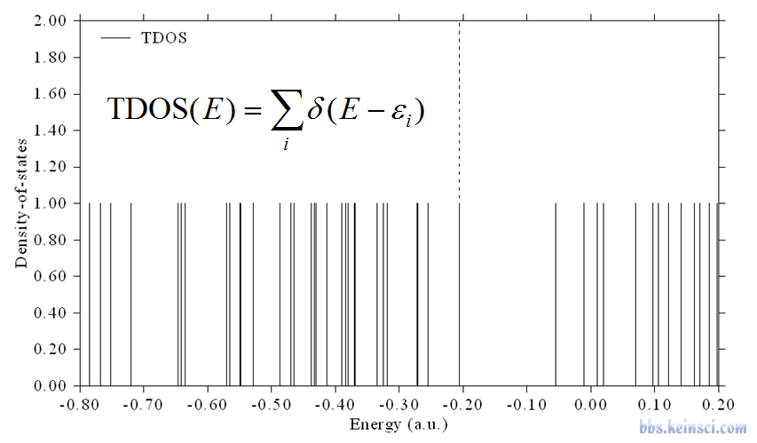
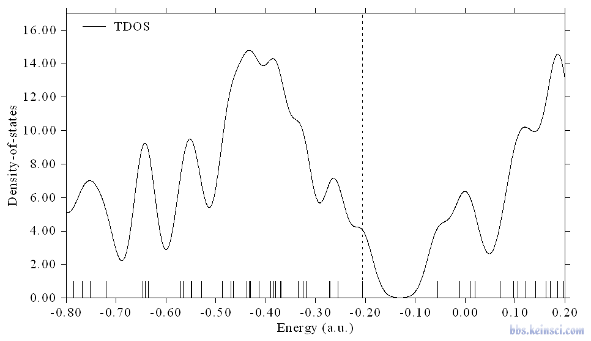
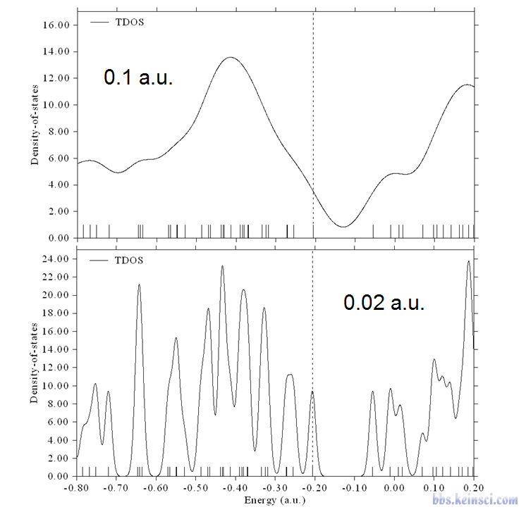
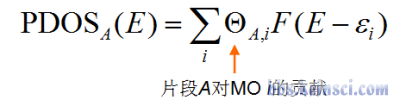
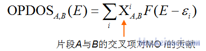
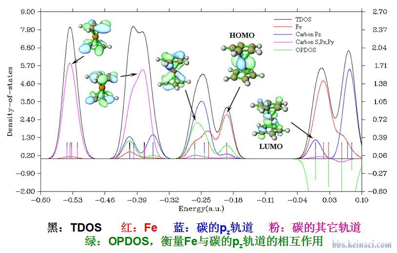
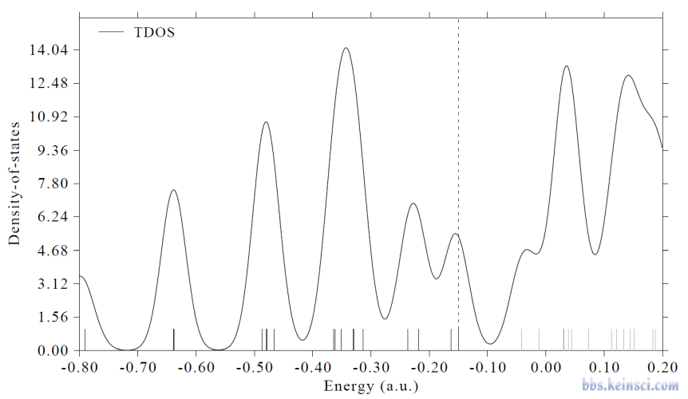
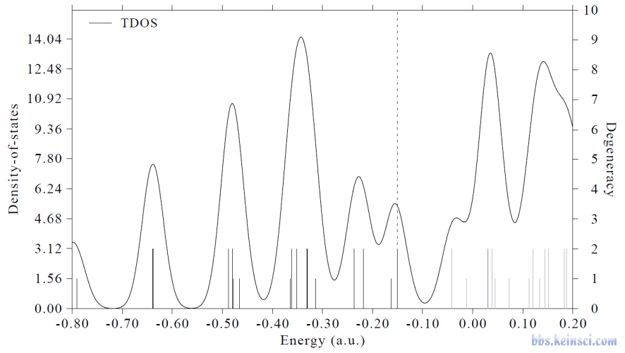
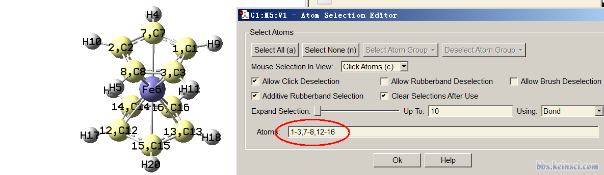
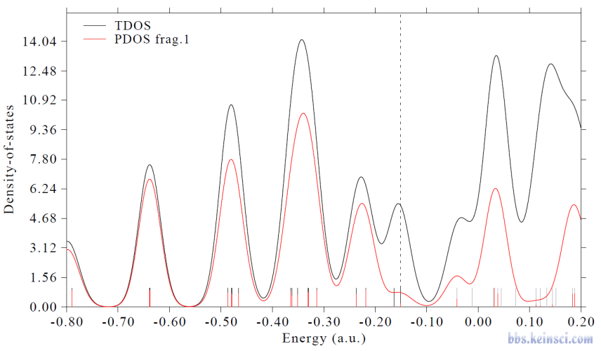
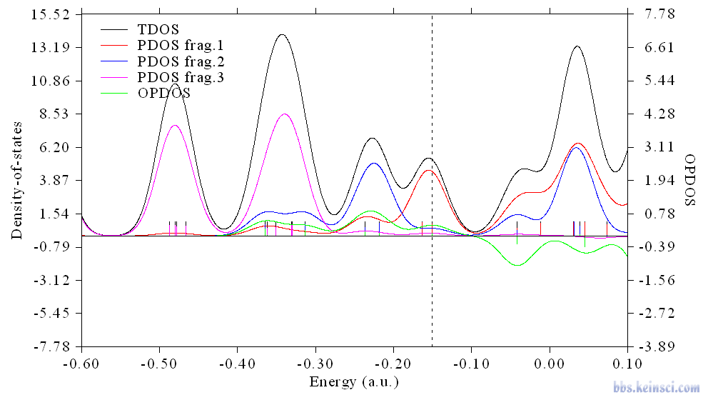
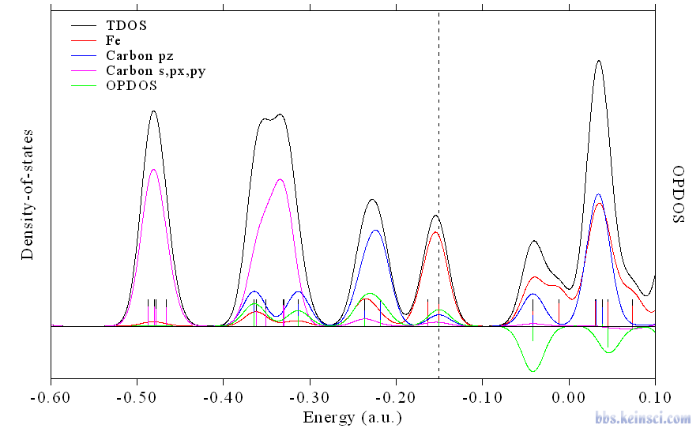
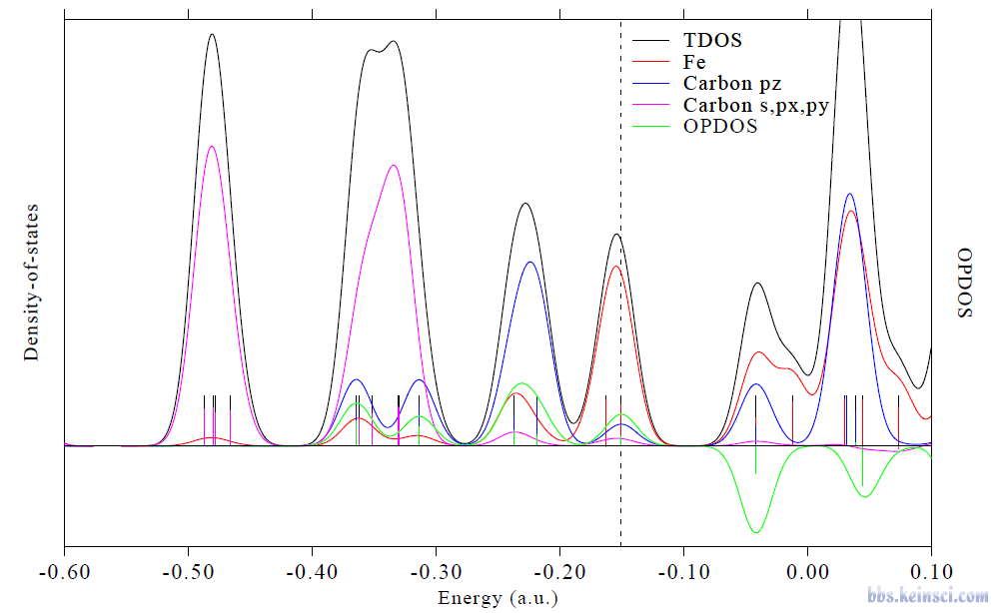
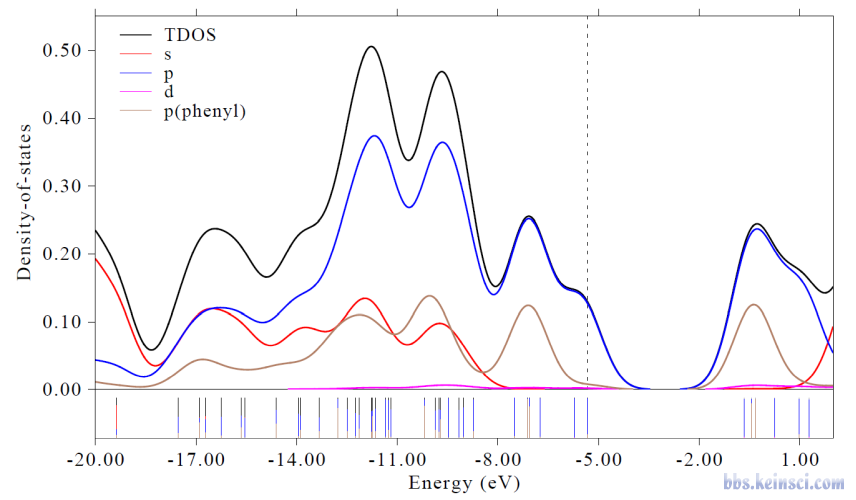
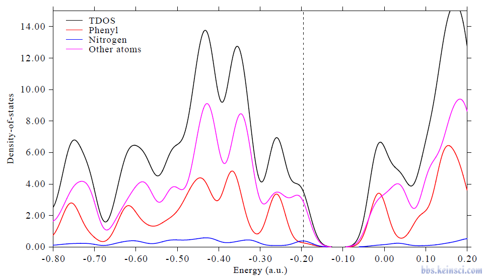
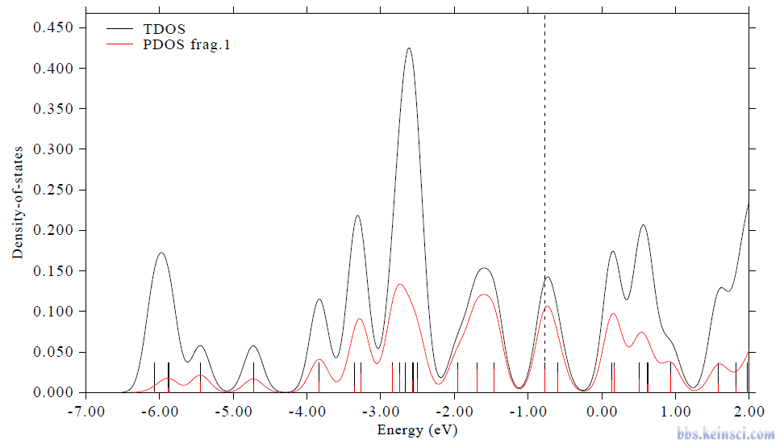
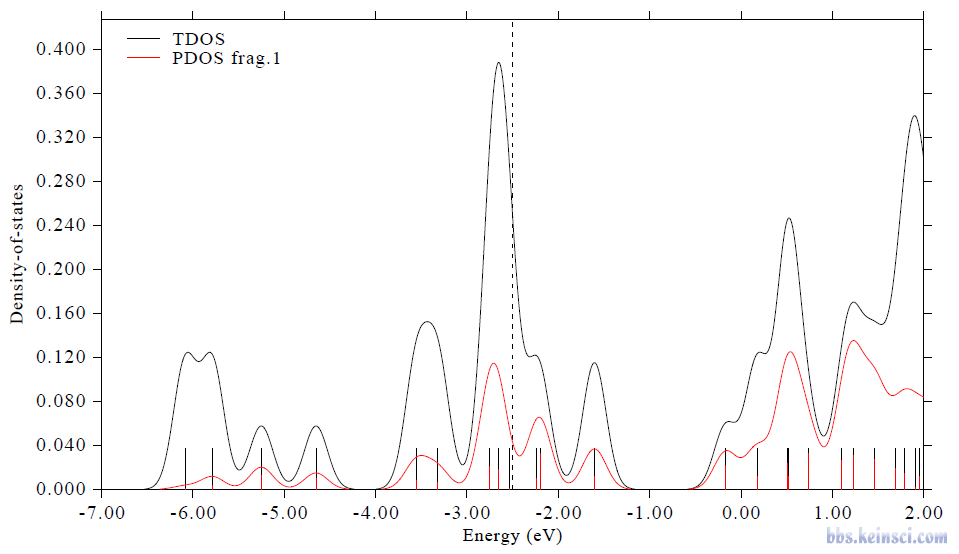
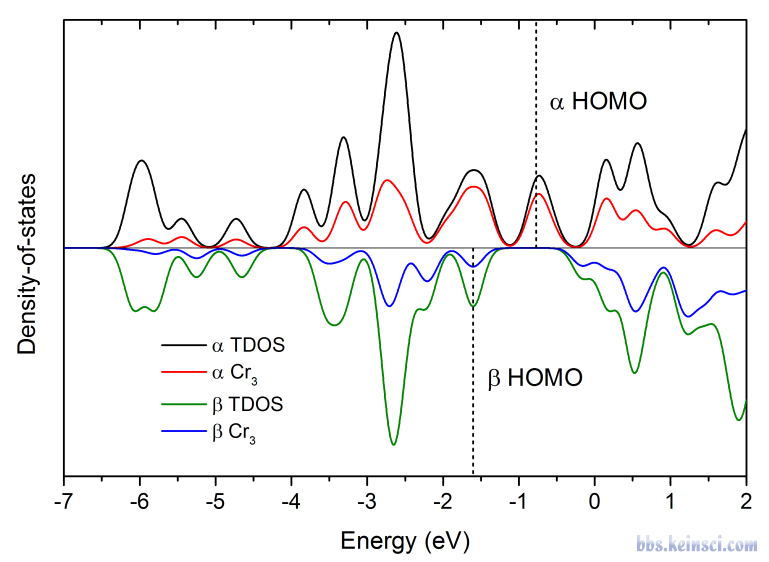
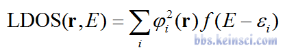
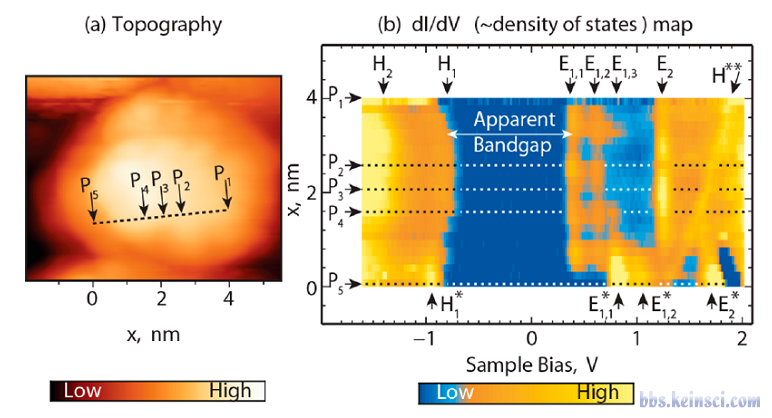
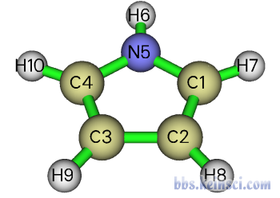
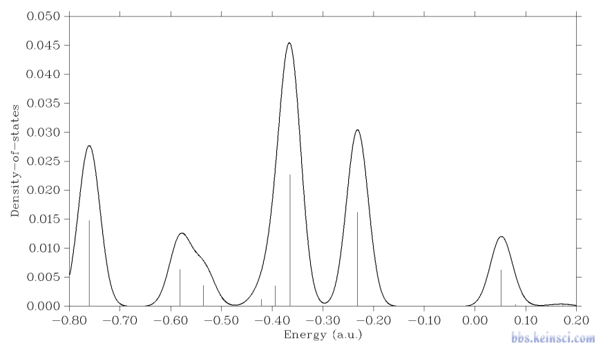
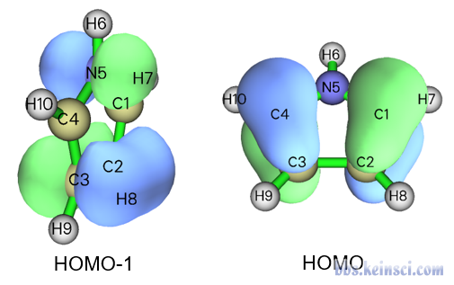
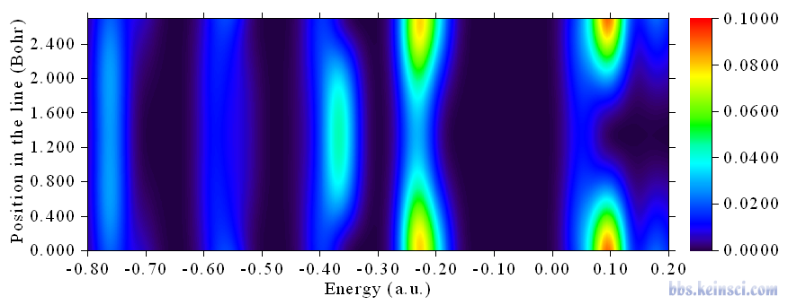
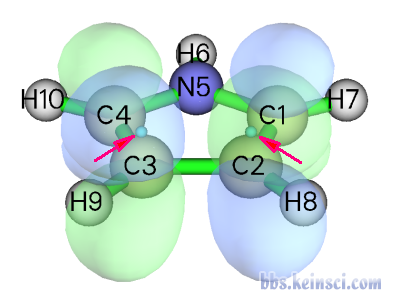
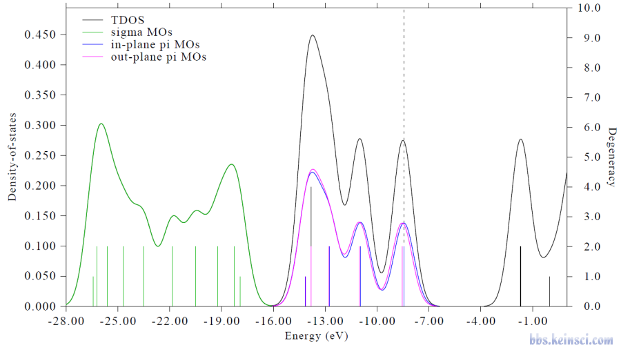
以上为本帖已下载的 26 个图片附件。